Wanderly
A travel discovery and planning platform that makes trip planning simple and inspiring.
UI/UX case study · 2025
A next-gen ACH payment and invoicing platform that streamlines financial operations for small and medium-sized businesses.
01 · Project overview
From secure logins to automated invoicing and fraud control, FlowSync puts users back in control of their payments.
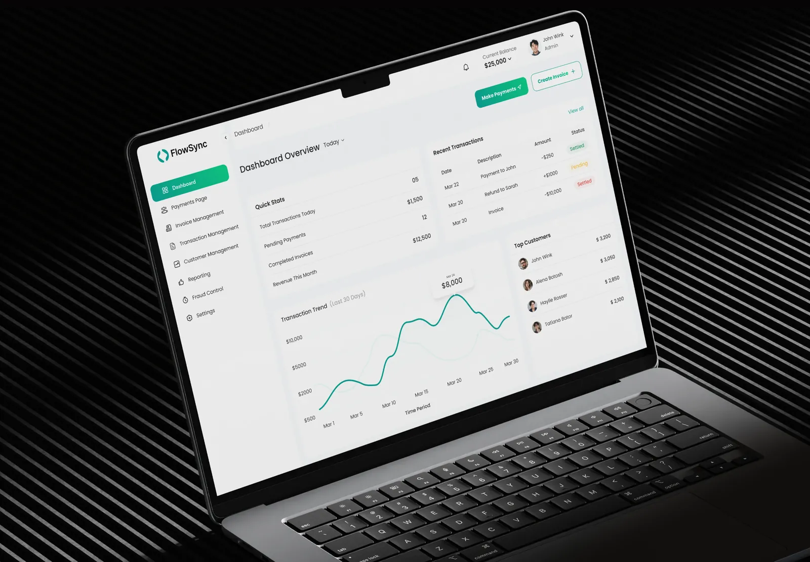
02 · The problem
Outdated interfaces and confusing workflows.
Unclear transaction statuses leading to follow-up delays.
Manual recurring invoicing, increasing admin burden.
Fragmented customer and transaction management.
Limited fraud controls, exposing businesses to risk.
03 · The solution
How it works
04 · My UX design process
Conducted interviews with 7 users (accountants, SMB owners, finance teams). Created empathy maps to understand emotions, goals, and frustrations.
Conducted interviews with 7 users (accountants, SMB owners, finance teams). Created empathy maps to understand emotions, goals, and frustrations.
Created multiple wireframe sketches. Co-designed dashboard and invoice flow with stakeholders.
Designed a component-based UI system (accessibility-focused). Used clear call-to-actions and color-coded status tags.
Built and tested Figma prototypes with 12 users. Iterated based on usability testing feedback.
Created dev-ready assets with design tokens and documentation. Supported implementation QA to ensure pixel-perfect delivery.
05 · User personas
Operations Manager
Needs
Goal
Small Business Owner
Needs
Goal
Accountant
Needs
Goal
06 · Secure user access
Features
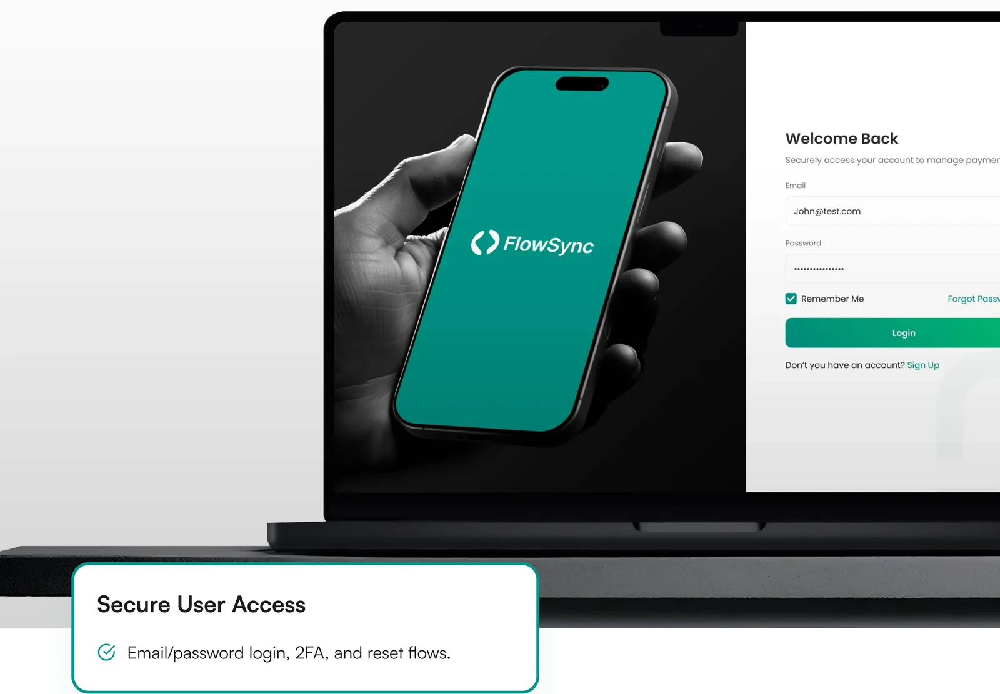
07 · Unified dashboard
Features
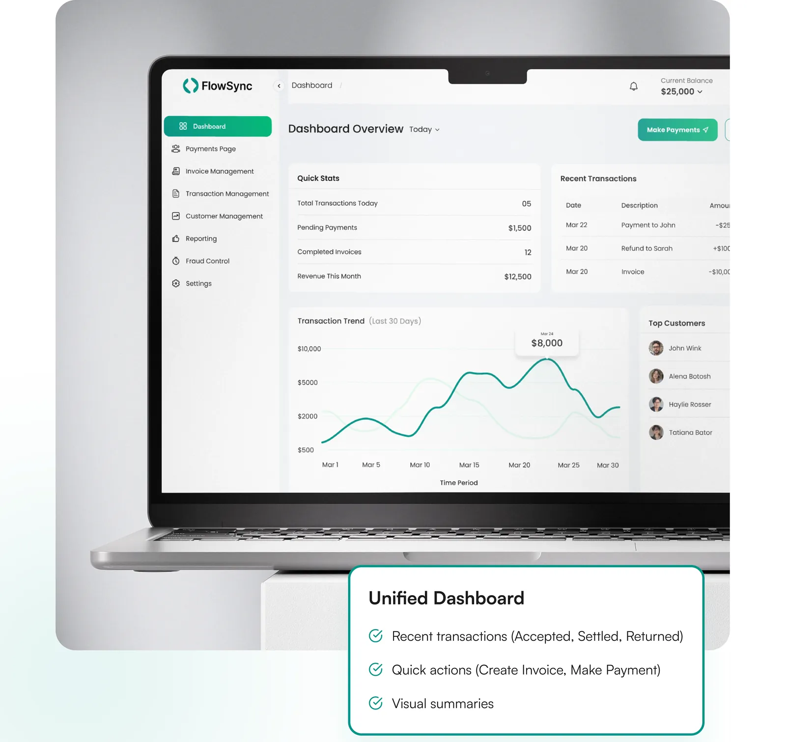
08 · Invoice management
Features
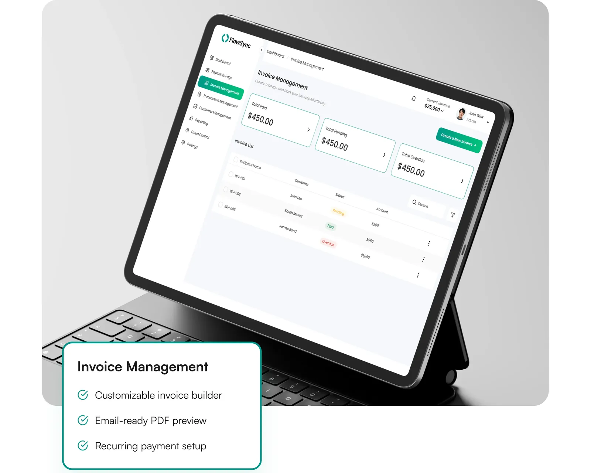
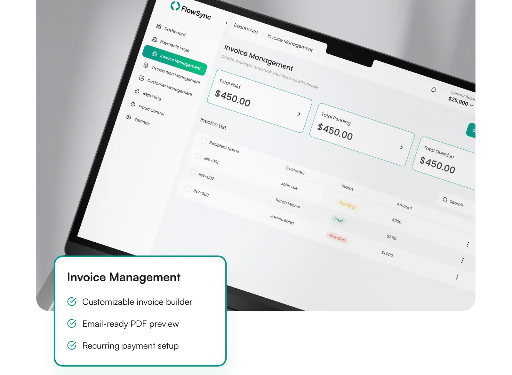
09 · Reporting
Features
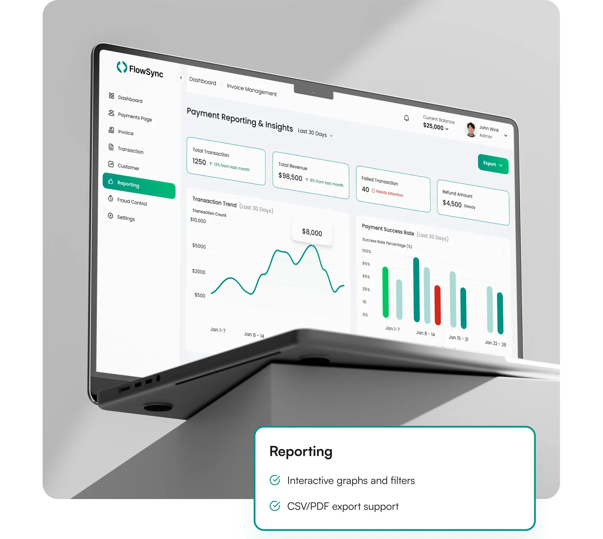
10 · Fraud controls
Features
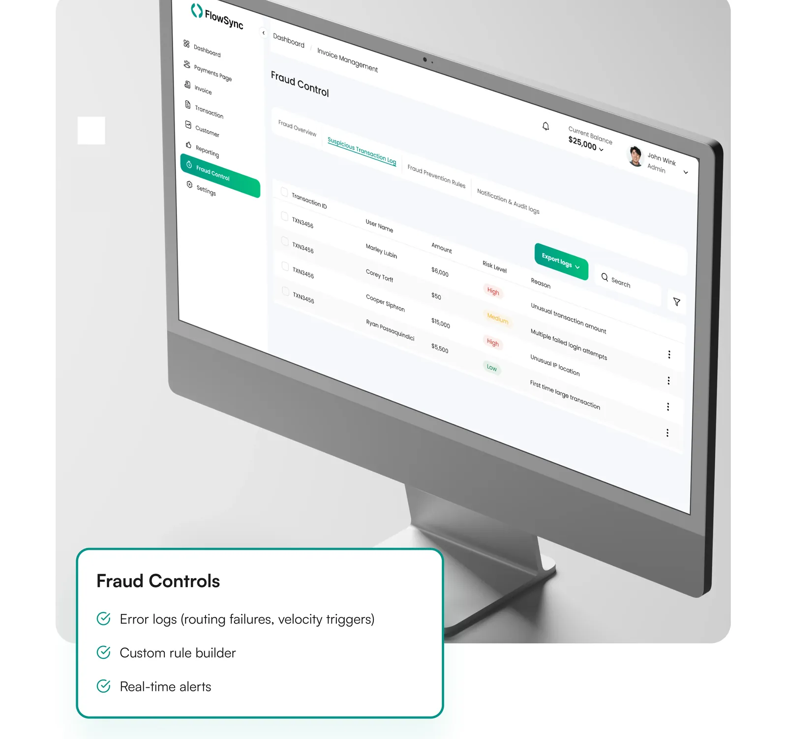
11 · Settings
Features
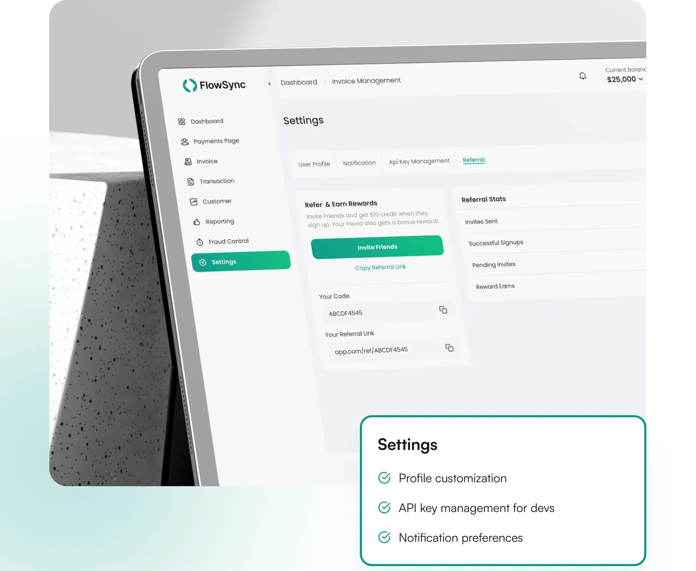
12 · Typography
A geometric sans-serif typeface known for its clean and modern aesthetic. Poppins features balanced letterforms and consistent stroke widths, making it an excellent choice for digital interfaces. Its friendly yet professional appearance enhances readability and brings a sense of approachability to fintech platforms like FlowSync.
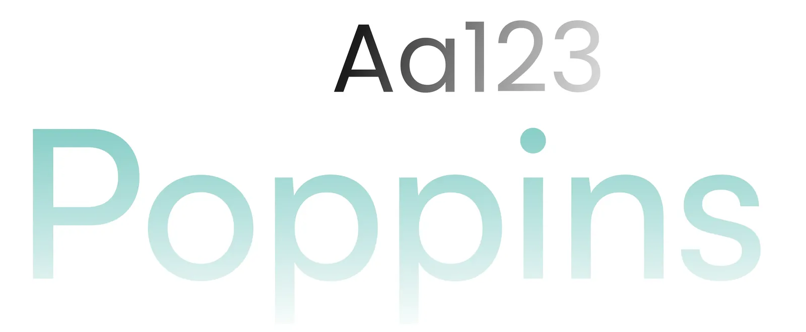
13 · Branding
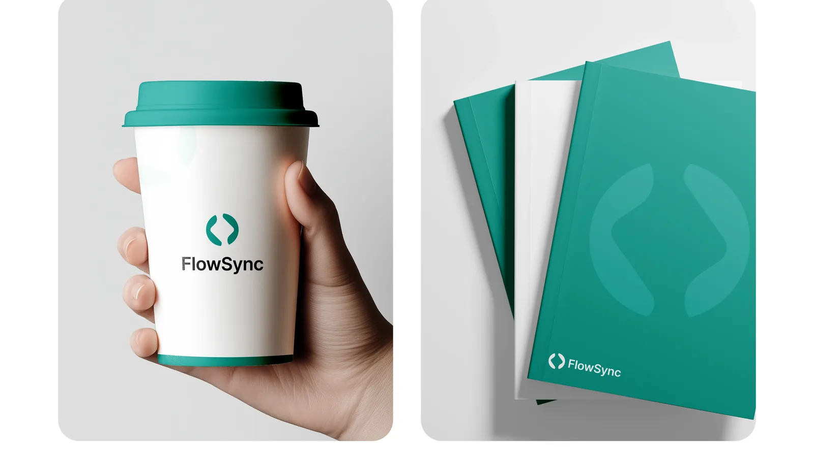
14 · Outcomes
3x faster invoice creation using templates and recurrence.
50% fewer support tickets related to payment confusion.
75% of users reported better visibility into transactions.
Reduced fraud incidents by 40% using custom rule controls.
15 · Final thoughts
By addressing real user pain points, we've created a product that is not only functional but delightful to use. It's a platform that scales with business needs while offering trust, clarity, and ease. I'm excited to bring this level of thoughtful, data-driven design to your next product.
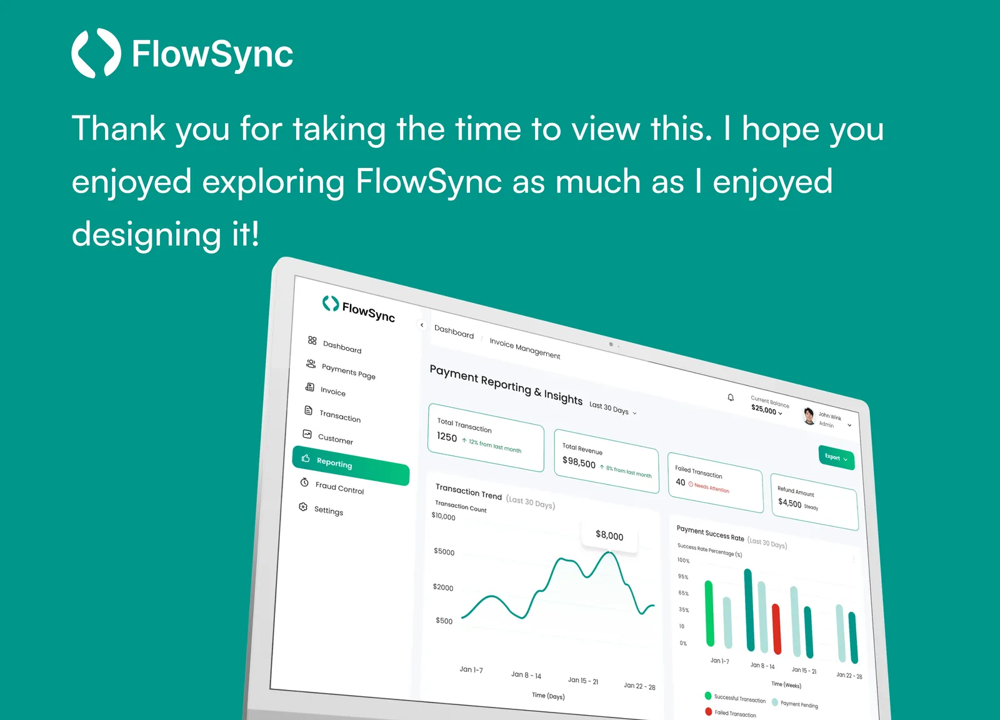
Full project
The complete project, with all screens and details, is published on my Behance profile.
Let's work together
I'm open to full-time roles and freelance projects. Drop me a line and I'll get back to you soon.